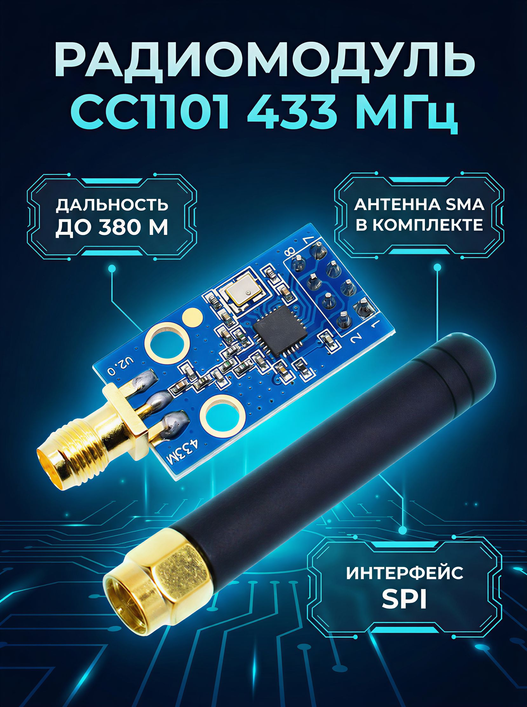

Радиомодуль CC1101 с SMA-антенной, 433 МГц
МодулиCC1101 — это низкопотребляющий суб-1 ГГц RF-трансивер Texas Instruments, который часто используется в готовых радиомодулях на 433 МГц. Версия с SMA-антенной обычно означает плату-модуль на базе этого чипа с внешней антенной для работы в ISM-диапазоне.
Модуль предназначен для передачи и приёма цифровых данных на дальности, зависящей от антенны, настроек и условий среды. Базовый чип CC1101 поддерживает несколько поддиапазонов, включая 315 и 433 МГц, поэтому вариант «433 МГц» — это практическая модификация под один из наиболее распространённых ISM-диапазонов. В даташите TI указаны очень низкое энергопотребление и чувствительность порядка −116 dBm на 0,6 kBaud при 433 МГц. Такие модули обычно применяют в радиобрелоках, датчиках, телеметрии, автоматике и DIY-проектах с малой скоростью обмена данными.